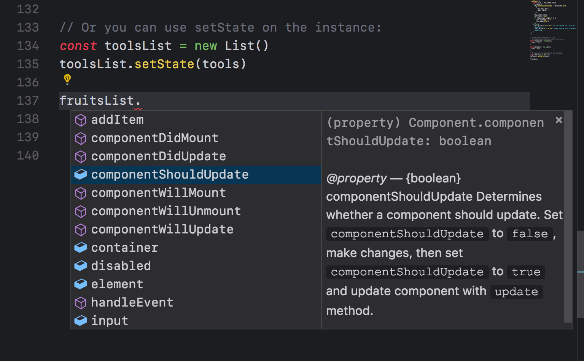
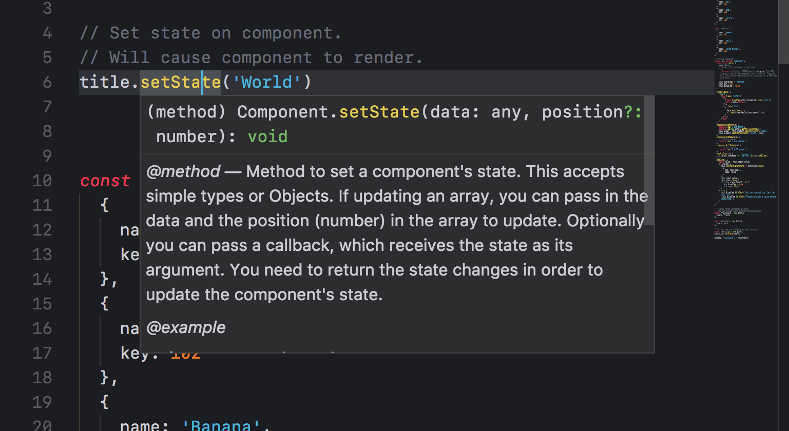
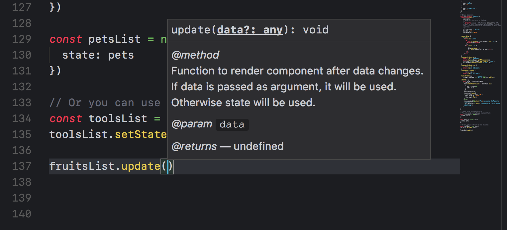

Handling Element Attributes
Often you need to dynamically add attributes to elements. Here we explain how Composi lets you do this. Follow these directions exactly to avoid unexpected results.
According to the documentation for Element.setAttribute, it expects a string. Often when we are managing attributes and properties in code, we use values that are booleans or numbers. When you pass these to Element.setAttribute, it automatically coerces them to strings.
To make it easier for you to control whether an attribute or property is set by a boolean value or removed, Composi handles these values in a particualr way. These are listed below:
- disabled={false} - attribute is removed
- disabled='false' - attribute is removed
- disabled={true} - element is disabled
- disabled={0} - attribute is removed because 0 is falsy
- disabled={null} - attribute is removed
- disabled={undefined} - attribute is removed
Any other values applied to the attribute disabled will result in it being attached to the element.
The translate attribute is not yet well supported in browsers, and therefore setting it has some quirks. By default, all elements are translatable. To make an element untranslatable, set its value to no. Using any other value, including false, null, undefined, etc. will result in the attribute being supported.
- translate={true} - attribute is added
- translate={false} - attribute is added
- translate='false' - attribute is added
- translate='no' - attribute is removed
Seeting an input to autocomplete:
- autocomplete='on' - autocomplete will be enabled
- autocomplete='off' - autocomplete will be disabled
For other types of attributes, values work as follows:
- attribute={false} - attribute is removed
- attribute='false' - attribute is removed
- attribute={undefined} - attribute is removed
- attribute='undefined' - attribue is removed
- attribute={null} - attribute is removed
- attribute='null' - attribute is removed
Any other values will result in the attribute being set.
Types and Type Safety
TypeScript and Flow allow developers to code with type checking during build time. Although Composi is written in ES6, it also provides builtin support for type checking when using Visual Studio Code. Using Webstorm you get a very minimalistic version of code completion. The Atom editor has the most rudimentary of the three. If type checking is something you're interested in, then you should consider using Composi with Visual Studio Code. It's free and runs on Mac, Linux and Windows.
Enabling Type Checking
Open Visual Studio Code and navigate to Preferences> Settings. Add the followin line to your settings configuration:
"javascript.implicitProjectConfig.checkJs": true. Below is a sample configuration file for JavaScript intellisense in Visual Studio Code. The last line enables type checking.
{
"editor.fontSize": 12,
"editor.tabSize": 2,
"editor.fontLigatures": true,
"editor.wordWrap": "on",
"editor.quickSuggestions": {
"other": true,
"comments": true,
"strings": false,
"editor.wordBasedSuggestions": false
},
"editor.wordBasedSuggestions": true,
"editor.parameterHints": true,
"emmet.triggerExpansionOnTab": true,
"emmet.includeLanguages": {
"javascript":"javascriptreact"
},
"npm.enableScriptExplorer": true
"javascript.implicitProjectConfig.checkJs": true,
}
Below is an example of a hint that appears as you enter code, enabling arrows keys for navigation and tab key for selecting a hint for code completion.

Below is an example of a definition that appears when you hover over code symbols in your project.

Below is an example of Visual Studio Code showing what the call signature is for a method.

Many other features are provided as well, such as definition peak, go to definition, renaming symbols across files for enhanced refactoring, etc. Visit the site and check the documention for its JavaScript editing environment and its JavaScript language service.